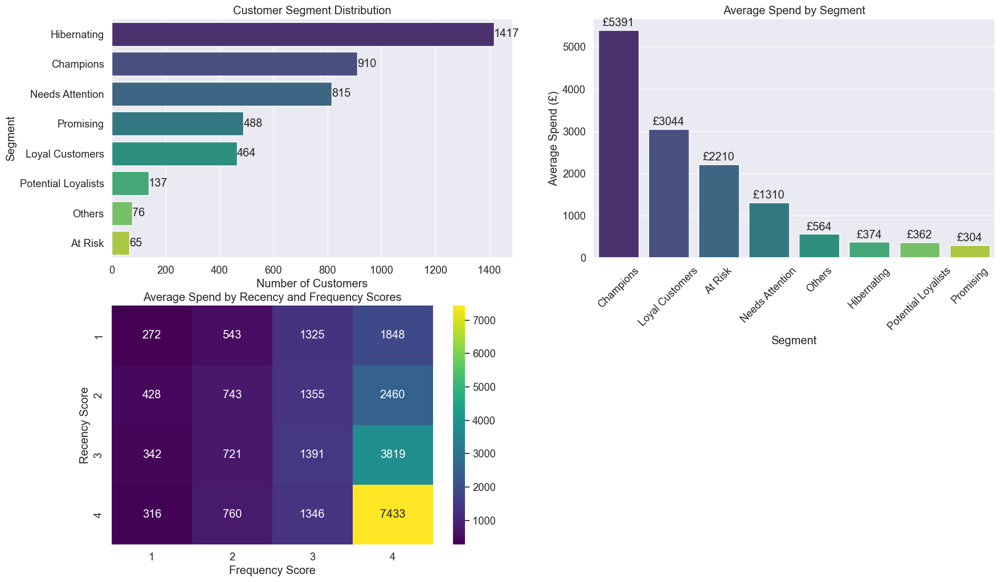

import pandas as pd
import numpy as np
import matplotlib.pyplot as plt
import seaborn as sns
from datetime import datetime, timedelta
# Set plotting style - updated for newer versions of matplotlib/seaborn
plt.style.use('default') # Use default style instead of deprecated 'seaborn-whitegrid'
sns.set_theme() # Modern way to set seaborn defaults
sns.set_context("notebook", font_scale=1.2)
# Load the data
def load_and_prepare_data(file_path):
"""
Load Excel file and prepare data for RFM analysis.
"""
print(f"Loading data from {file_path}...")
df = pd.read_excel(file_path)
print("\nDataset Overview:")
print(f"- Shape: {df.shape}")
print(f"- Columns: {', '.join(df.columns)}")
# Check for missing values
missing_values = df.isnull().sum()
print("\nMissing Values:")
for col, count in missing_values.items():
if count > 0:
print(f"- {col}: {count} missing values ({count/len(df)*100:.2f}%)")
# Filter out records with missing CustomerID
df_clean = df.dropna(subset=['CustomerID'])
df_clean['CustomerID'] = df_clean['CustomerID'].astype(int)
# Check for negative quantities (returns)
returns = df_clean[df_clean['Quantity'] < 0]
print(f"\nReturns identified: {len(returns)} records")
# Calculate total value of each transaction
df_clean['TotalValue'] = df_clean['Quantity'] * df_clean['UnitPrice']
return df_clean
# Perform RFM analysis
def perform_rfm_analysis(df, analysis_date=None):
"""
Calculate RFM metrics for each customer.
"""
# If no analysis date provided, use the max date in the dataset + 1 day
if analysis_date is None:
analysis_date = df['InvoiceDate'].max() + timedelta(days=1)
print(f"Using analysis date: {analysis_date}")
# Group by CustomerID
rfm = df.groupby('CustomerID').agg({
'InvoiceDate': lambda x: (analysis_date - x.max()).days, # Recency
'InvoiceNo': 'nunique', # Frequency
'TotalValue': 'sum' # Monetary
}).reset_index()
# Rename columns
rfm.columns = ['CustomerID', 'Recency', 'Frequency', 'Monetary']
# Add additional metrics
customer_data = df.groupby('CustomerID').agg({
'Country': lambda x: x.iloc[0], # Get the country of the customer
'StockCode': 'nunique', # Number of unique products
'Quantity': 'sum' # Total quantity
}).reset_index()
# Merge with RFM data
rfm = pd.merge(rfm, customer_data, on='CustomerID')
rfm.rename(columns={'StockCode': 'UniqueProducts', 'Quantity': 'TotalQuantity'}, inplace=True)
# Calculate average transaction value
rfm['AvgTransactionValue'] = rfm['Monetary'] / rfm['Frequency']
print("\nRFM Metrics Calculated:")
print(f"- Customers analyzed: {len(rfm)}")
print(f"- Average Recency: {rfm['Recency'].mean():.2f} days")
print(f"- Average Frequency: {rfm['Frequency'].mean():.2f} transactions")
print(f"- Average Monetary: £{rfm['Monetary'].mean():.2f}")
return rfm
# Create RFM scores
def create_rfm_scores(rfm):
"""
Create RFM scores and segment customers.
"""
# Handle potential edge cases where qcut might fail due to duplicates
# For Recency, lower is better (more recent)
try:
rfm['R_Score'] = pd.qcut(rfm['Recency'], 4, labels=[4, 3, 2, 1])
except ValueError:
# If pandas.qcut fails due to duplicate values, use rank instead
rfm['R_Score'] = pd.cut(rfm['Recency'],
bins=[rfm['Recency'].min()-1,
rfm['Recency'].quantile(0.25),
rfm['Recency'].quantile(0.5),
rfm['Recency'].quantile(0.75),
rfm['Recency'].max()],
labels=[4, 3, 2, 1])
# For Frequency and Monetary, higher is better
try:
rfm['F_Score'] = pd.qcut(rfm['Frequency'], 4, labels=[1, 2, 3, 4])
except ValueError:
rfm['F_Score'] = pd.cut(rfm['Frequency'],
bins=[rfm['Frequency'].min()-1,
rfm['Frequency'].quantile(0.25),
rfm['Frequency'].quantile(0.5),
rfm['Frequency'].quantile(0.75),
rfm['Frequency'].max()],
labels=[1, 2, 3, 4])
try:
rfm['M_Score'] = pd.qcut(rfm['Monetary'], 4, labels=[1, 2, 3, 4])
except ValueError:
rfm['M_Score'] = pd.cut(rfm['Monetary'],
bins=[rfm['Monetary'].min()-1,
rfm['Monetary'].quantile(0.25),
rfm['Monetary'].quantile(0.5),
rfm['Monetary'].quantile(0.75),
rfm['Monetary'].max()],
labels=[1, 2, 3, 4])
# Calculate RFM score
rfm['RFM_Score'] = rfm['R_Score'].astype(str) + rfm['F_Score'].astype(str) + rfm['M_Score'].astype(str)
rfm['RFM_Total'] = rfm['R_Score'].astype(int) + rfm['F_Score'].astype(int) + rfm['M_Score'].astype(int)
print("\nRFM Scoring Complete:")
print("- R_Score 4 = Most recent customers")
print("- F_Score 4 = Most frequent customers")
print("- M_Score 4 = Highest spending customers")
return rfm
# Assign customer segments
def assign_segments(rfm):
"""
Assign customers to segments based on RFM scores.
"""
# Define segments based on RFM scores
def segment_customer(row):
r, f, m = row['R_Score'], row['F_Score'], row['M_Score']
# Convert to int for easier comparison
r, f, m = int(r), int(f), int(m)
# Champions: recent, frequent buyers with high spend
if r >= 4 and (f >= 3 or m >= 3):
return 'Champions'
# Loyal Customers: buy regularly with above average spend
elif (r >= 3) and (f >= 3) and (m >= 3):
return 'Loyal Customers'
# Potential Loyalists: recent customers with average frequency
elif r >= 4 and (f >= 2):
return 'Potential Loyalists'
# Promising: recent customers, not frequent yet
elif r >= 3 and (f <= 2) and (m <= 2):
return 'Promising'
# Needs Attention: above average recency, frequency and monetary values
elif (r >= 2) and (f >= 2) and (m >= 2):
return 'Needs Attention'
# At Risk: purchased often but long time ago
elif (r <= 2) and (f >= 3) and (m >= 3):
return 'At Risk'
# Can't Lose: made big purchases and often but haven't returned recently
elif (r <= 1) and (f >= 4) and (m >= 4):
return "Can't Lose"
# Hibernating: low values in all metrics
elif (r <= 2) and (f <= 2):
return 'Hibernating'
# Others
else:
return 'Others'
rfm['Segment'] = rfm.apply(segment_customer, axis=1)
segment_counts = rfm['Segment'].value_counts()
print("\nCustomer Segments:")
for segment, count in segment_counts.items():
print(f"- {segment}: {count} customers ({count/len(rfm)*100:.2f}%)")
return rfm
# Analyze segments
def analyze_segments(rfm):
"""
Analyze characteristics of each segment.
"""
# Calculate average metrics per segment
segment_metrics = rfm.groupby('Segment').agg({
'Recency': 'mean',
'Frequency': 'mean',
'Monetary': 'mean',
'RFM_Total': 'mean',
'UniqueProducts': 'mean',
'AvgTransactionValue': 'mean',
'CustomerID': 'count'
}).reset_index()
segment_metrics.rename(columns={'CustomerID': 'Count'}, inplace=True)
segment_metrics = segment_metrics.sort_values('RFM_Total', ascending=False)
print("\nSegment Profiles:")
for _, row in segment_metrics.iterrows():
print(f"\n{row['Segment']} ({int(row['Count'])} customers):")
print(f"- Avg Recency: {row['Recency']:.2f} days")
print(f"- Avg Frequency: {row['Frequency']:.2f} transactions")
print(f"- Avg Monetary: £{row['Monetary']:.2f}")
print(f"- Avg RFM Score: {row['RFM_Total']:.2f}")
print(f"- Avg Unique Products: {row['UniqueProducts']:.2f}")
print(f"- Avg Transaction Value: £{row['AvgTransactionValue']:.2f}")
return segment_metrics
# Create visualizations
def create_visualizations(rfm, segment_metrics):
"""
Create visualizations for RFM analysis.
"""
# Set up figure
plt.figure(figsize=(20, 12))
# 1. Segment Distribution
plt.subplot(2, 2, 1)
ax1 = sns.countplot(y='Segment', data=rfm, order=rfm['Segment'].value_counts().index,
palette='viridis')
plt.title('Customer Segment Distribution')
plt.xlabel('Number of Customers')
plt.ylabel('Segment')
# Add count labels
for p in ax1.patches:
width = p.get_width()
plt.text(width + 1, p.get_y() + p.get_height()/2, f'{int(width)}',
va='center')
# 2. Average Monetary Value by Segment
plt.subplot(2, 2, 2)
sorted_segments = segment_metrics.sort_values('Monetary', ascending=False)
ax2 = sns.barplot(x='Segment', y='Monetary', data=sorted_segments, palette='viridis')
plt.title('Average Spend by Segment')
plt.xlabel('Segment')
plt.ylabel('Average Spend (£)')
plt.xticks(rotation=45)
# Add value labels
for p in ax2.patches:
ax2.annotate(f'£{p.get_height():.0f}',
(p.get_x() + p.get_width() / 2., p.get_height()),
ha='center', va='center',
xytext=(0, 9),
textcoords='offset points')
# 3. RFM Heatmap
plt.subplot(2, 2, 3)
# Convert R_Score, F_Score to numeric if they're categorical
rfm_numeric = rfm.copy()
rfm_numeric['R_Score'] = rfm_numeric['R_Score'].astype(int)
rfm_numeric['F_Score'] = rfm_numeric['F_Score'].astype(int)
# Create pivot table
rfm_pivot = rfm_numeric.pivot_table(
values='Monetary',
index=['R_Score'],
columns=['F_Score'],
aggfunc='mean'
)
# Plot heatmap
sns.heatmap(rfm_pivot, annot=True, fmt='.0f', cmap='viridis')
plt.title('Average Spend by Recency and Frequency Scores')
plt.xlabel('Frequency Score')
plt.ylabel('Recency Score')
# # 4. Country Distribution by Segment
# plt.subplot(2, 2, 4)
# country_segment = pd.crosstab(rfm['Country'], rfm['Segment'])
# country_segment.plot(kind='bar', stacked=True, colormap='viridis')
# plt.title('Segments by Country')
# plt.xlabel('Country')
# plt.ylabel('Number of Customers')
# plt.xticks(rotation=45)
# plt.tight_layout()
# plt.savefig('rfm_analysis_results.png', dpi=300)
# print("\nVisualizations have been saved as 'rfm_analysis_results.png'")
# Get top customers
def get_top_customers(rfm, n=10):
"""
Identify top customers by RFM score.
"""
top_customers = rfm.sort_values(['RFM_Total', 'Monetary'], ascending=False).head(n)
print(f"\nTop {n} Customers:")
for i, (_, customer) in enumerate(top_customers.iterrows(), 1):
print(f"\n{i}. Customer ID: {int(customer['CustomerID'])}")
print(f" - Country: {customer['Country']}")
print(f" - Segment: {customer['Segment']}")
print(f" - RFM Score: {int(customer['RFM_Total'])}/12")
print(f" - Total Spend: £{customer['Monetary']:.2f}")
print(f" - Purchase Frequency: {customer['Frequency']} transactions")
print(f" - Unique Products: {customer['UniqueProducts']}")
return top_customers
# Main function to run the complete analysis
# At the end of your existing code, right before the "if __name__ == '__main__':" line,
# add the alternative visualization functions from the artifact I provided.
# Then, modify your run_rfm_analysis function to include the new visualizations:
def run_rfm_analysis(file_path, analysis_date=None):
"""
Run the complete RFM analysis workflow.
"""
print("=" * 80)
print("RFM CUSTOMER SEGMENTATION ANALYSIS")
print("=" * 80)
# Load and prepare data
df = load_and_prepare_data(file_path)
# Perform RFM analysis
rfm = perform_rfm_analysis(df, analysis_date)
# Create RFM scores
rfm = create_rfm_scores(rfm)
# Assign segments
rfm = assign_segments(rfm)
# Analyze segments
segment_metrics = analyze_segments(rfm)
# Create standard visualizations
create_visualizations(rfm, segment_metrics)
# Create additional country-based visualizations
print("\nGenerating alternative country visualizations...")
# Get top customers
top_customers = get_top_customers(rfm, 5)
print("\n" + "=" * 80)
print("ANALYSIS COMPLETE")
print("=" * 80)
return rfm, segment_metrics, top_customers
# If running as a script
if __name__ == "__main__":
# Run the analysis
file_path = "https://archive.ics.uci.edu/ml/machine-learning-databases/00352/Online%20Retail.xlsx" # Update with your file path
rfm_results, segment_metrics, top_customers = run_rfm_analysis(file_path)
# Export results to CSV
rfm_results.to_csv('data/rfm_customer_segments.csv', index=False)
segment_metrics.to_csv('data/segment_profiles.csv', index=False)
print("\nResults exported to CSV files.")================================================================================
RFM CUSTOMER SEGMENTATION ANALYSIS
================================================================================
Loading data from https://archive.ics.uci.edu/ml/machine-learning-databases/00352/Online%20Retail.xlsx...
Dataset Overview:
- Shape: (541909, 8)
- Columns: InvoiceNo, StockCode, Description, Quantity, InvoiceDate, UnitPrice, CustomerID, Country
Missing Values:
- Description: 1454 missing values (0.27%)
- CustomerID: 135080 missing values (24.93%)
Returns identified: 8905 records
Using analysis date: 2011-12-10 12:50:00
RFM Metrics Calculated:
- Customers analyzed: 4372
- Average Recency: 92.05 days
- Average Frequency: 5.08 transactions
- Average Monetary: £1898.46
RFM Scoring Complete:
- R_Score 4 = Most recent customers
- F_Score 4 = Most frequent customers
- M_Score 4 = Highest spending customers
Customer Segments:
- Hibernating: 1417 customers (32.41%)
- Champions: 910 customers (20.81%)
- Needs Attention: 815 customers (18.64%)
- Promising: 488 customers (11.16%)
- Loyal Customers: 464 customers (10.61%)
- Potential Loyalists: 137 customers (3.13%)
- Others: 76 customers (1.74%)
- At Risk: 65 customers (1.49%)
Segment Profiles:
Champions (910 customers):
- Avg Recency: 7.37 days
- Avg Frequency: 12.48 transactions
- Avg Monetary: £5390.64
- Avg RFM Score: 11.12
- Avg Unique Products: 126.24
- Avg Transaction Value: £371.87
Loyal Customers (464 customers):
- Avg Recency: 29.86 days
- Avg Frequency: 8.21 transactions
- Avg Monetary: £3043.96
- Avg RFM Score: 10.19
- Avg Unique Products: 104.50
- Avg Transaction Value: £343.22
Needs Attention (815 customers):
- Avg Recency: 72.27 days
- Avg Frequency: 4.05 transactions
- Avg Monetary: £1309.54
- Avg RFM Score: 7.82
- Avg Unique Products: 58.24
- Avg Transaction Value: £349.14
At Risk (65 customers):
- Avg Recency: 201.74 days
- Avg Frequency: 6.60 transactions
- Avg Monetary: £2210.20
- Avg RFM Score: 7.80
- Avg Unique Products: 78.91
- Avg Transaction Value: £381.54
Potential Loyalists (137 customers):
- Avg Recency: 8.68 days
- Avg Frequency: 2.30 transactions
- Avg Monetary: £362.20
- Avg RFM Score: 7.66
- Avg Unique Products: 31.08
- Avg Transaction Value: £160.40
Others (76 customers):
- Avg Recency: 136.82 days
- Avg Frequency: 3.68 transactions
- Avg Monetary: £563.54
- Avg RFM Score: 6.43
- Avg Unique Products: 32.22
- Avg Transaction Value: £383.42
Promising (488 customers):
- Avg Recency: 28.04 days
- Avg Frequency: 1.52 transactions
- Avg Monetary: £304.04
- Avg RFM Score: 6.06
- Avg Unique Products: 28.11
- Avg Transaction Value: £219.28
Hibernating (1417 customers):
- Avg Recency: 200.84 days
- Avg Frequency: 1.38 transactions
- Avg Monetary: £374.33
- Avg RFM Score: 4.22
- Avg Unique Products: 22.04
- Avg Transaction Value: £293.51
Generating alternative country visualizations...
Top 5 Customers:
1. Customer ID: 14646
- Country: Netherlands
- Segment: Champions
- RFM Score: 12/12
- Total Spend: £279489.02
- Purchase Frequency: 77 transactions
- Unique Products: 703
2. Customer ID: 18102
- Country: United Kingdom
- Segment: Champions
- RFM Score: 12/12
- Total Spend: £256438.49
- Purchase Frequency: 62 transactions
- Unique Products: 151
3. Customer ID: 17450
- Country: United Kingdom
- Segment: Champions
- RFM Score: 12/12
- Total Spend: £187482.17
- Purchase Frequency: 55 transactions
- Unique Products: 127
4. Customer ID: 14911
- Country: EIRE
- Segment: Champions
- RFM Score: 12/12
- Total Spend: £132572.62
- Purchase Frequency: 248 transactions
- Unique Products: 1794
5. Customer ID: 14156
- Country: EIRE
- Segment: Champions
- RFM Score: 12/12
- Total Spend: £113384.14
- Purchase Frequency: 66 transactions
- Unique Products: 716
================================================================================
ANALYSIS COMPLETE
================================================================================
Results exported to CSV files./var/folders/_3/45612wnj07v1x0p_l6mqmjkw0000gn/T/ipykernel_82671/2494590231.py:33: SettingWithCopyWarning:
A value is trying to be set on a copy of a slice from a DataFrame.
Try using .loc[row_indexer,col_indexer] = value instead
See the caveats in the documentation: https://pandas.pydata.org/pandas-docs/stable/user_guide/indexing.html#returning-a-view-versus-a-copy
df_clean['CustomerID'] = df_clean['CustomerID'].astype(int)
/var/folders/_3/45612wnj07v1x0p_l6mqmjkw0000gn/T/ipykernel_82671/2494590231.py:40: SettingWithCopyWarning:
A value is trying to be set on a copy of a slice from a DataFrame.
Try using .loc[row_indexer,col_indexer] = value instead
See the caveats in the documentation: https://pandas.pydata.org/pandas-docs/stable/user_guide/indexing.html#returning-a-view-versus-a-copy
df_clean['TotalValue'] = df_clean['Quantity'] * df_clean['UnitPrice']
/var/folders/_3/45612wnj07v1x0p_l6mqmjkw0000gn/T/ipykernel_82671/2494590231.py:237: FutureWarning:
Passing `palette` without assigning `hue` is deprecated and will be removed in v0.14.0. Assign the `y` variable to `hue` and set `legend=False` for the same effect.
ax1 = sns.countplot(y='Segment', data=rfm, order=rfm['Segment'].value_counts().index,
/var/folders/_3/45612wnj07v1x0p_l6mqmjkw0000gn/T/ipykernel_82671/2494590231.py:252: FutureWarning:
Passing `palette` without assigning `hue` is deprecated and will be removed in v0.14.0. Assign the `x` variable to `hue` and set `legend=False` for the same effect.
ax2 = sns.barplot(x='Segment', y='Monetary', data=sorted_segments, palette='viridis')